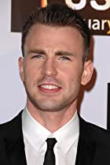

🎬 ~ There are a lot of Marvel movies out and even more coming. Here are my Top 5 marvel movies of all time.
In this movie, you can see all the avengers coming together one by one to help save the world. The main villain is Loki, and in greed of power he brings an extraterrestial attack into planet Earth.
| Character: | Played By: | Description: |
|---|---|---|
| Iron Man | |
Iron Man played by Robert Downey Jr is a human inside a robot built by the human himself. He is the first member of the Avengers team. |
| Black Widow | |
Natasha Romanoff was one of the most talented spies and assassins in the entire world and a founding member of the Avengers. |
| Hulk | |
Doctor Robert Bruce Banner is a scientist and a founding member of the Avengers. When angered, provoked or excited, his body and brain would transform into a huge, rage-fueled, primitive-minded creature known as the Hulk. |
In this movie, after a S.H.I.E.L.D colleague is attacked, Captain America comes together with the Black Widow and the Falcon to fight the enemy, but comes across a new enemy named the Winter Soldier
| Character: | Played By: | Description: |
|---|---|---|
| The Winter Soldier | |
Winter Soldier played by Sebastian Stan is a very mysterious character. With no-one knowing his identity, he comes accross as very violent and dangerous. |
| Captain America |  |
Captain Steve Rogers is a World War II veteran, a founding member of the Avengers, and Earth's first known superhero. |
| The Falcon | |
Sam Wilson is a former United States Air Force pararescue airman who wielded an experimental military wingsuit, operating under the callsign Falcon |
In this movie Thor fights to restore order across the cosmos but an ancient race led by the vengeful Malekith returns to plunge the universe back into darkness.
| Character: | Played By: | Description: |
|---|---|---|
| Thor | |
Thor Odinson is the Asgardian God of Thunder, the former king of Asgard and New Asgard, and a founding member of the Avengers. |
| Loki | |
Loki is Thor's adopted brother who is also knows as the God of Mischief becuuse of his mastermind games |
Lucy: Some of these movies are my favourites too!